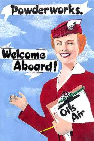

|
OILS
Links
The
Dead Heart
Maurice Kelly's Motherlode of Online Oils Resources
The
Aussie Midnight Oil Page
Krusty Fries' Krazy Kollection from Oz
Magnus
Holgren's Midnight Oil Collection
The name says it all
Australian
Rock Database
Deep Source for Fans of the "Sound Down Under"
The Official Midnight
Oil Site
The site has moved back to Australia, but is down for retooling.
A short preview of the new site in late spring revealed some of the
latest interactive bells and whistles, great design, and a few bugs.
Keep your fingers crossed...
|

Art by Barbie Edwards
|